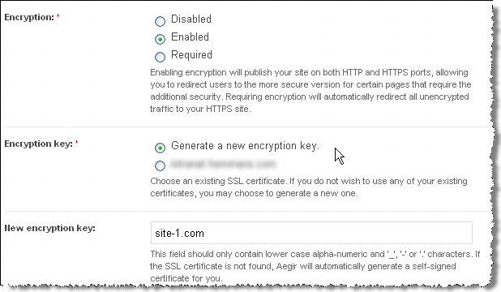

community.aegirproject.org
Using SSL
Introduction
SSL support was significantly improved in Aegir 0.4 alpha9 and subsequent releases have further refined the SSL functionality. Here are the current steps to configure SSL support in Aegir and apply it to your web sites.
Prepare Your Server
- Make sure port 443 is open for SSL traffic.
- From the command line, install SSL software for your web server (e.g. on Debian/Ubuntu you can use
sudo apt-get install openssl). - Enable SSL support (e.g.
sudo a2enmod ssl). You will need to restart Apache at this point.
Enable SSL Support in Aegir
- You have to enable SSL support in Aegir as it is off by default. Assuming the URL of your Aegir front end is aegir.example.com, browse to aegir.example.com/admin/hosting/features

- Click on Experimental to reveal experimental features

- Check SSL support
- Click Save configuration
Configure Your Aegir Server
- Click on the Servers tab
- Click on the server that you wish to enable SSL support
- Click Edit to change the server configuration
- Click apache_ssl (this will reveal an additional field: SSL port, which should be already populated with 443).

- You may also have to add an IP address to the IP addresses field. The field is used as an "IP pool" for SSL certificates: IPs are assigned to SSL sites when they are created on a first come, first served basis. (Note that there are known issues with this process, see issue #1126640 for details.)
- Click Save - this will start various tasks beginning with a verify task on the server followed by verify tasks on all platforms that are associated with that server
- If all goes well you will see the following changes in your Aegir file system structure:
a new
/var/aegir/config/ssl.ddirectory and a new/var/aegir/config/server_master/ssl.ddirectory.
The /var/aegir/config/ssl.d directory is where you will be able to manipulate SSL keys and certificates, for example by importing commercial SSL certificates or generating a new key. Do not manually edit the /var/aegir/config/server_master/ssl.d directory as changes to that directory will be overwritten when the server or site are verified.
Configure Your Aegir Site
- You must enable SSL on your sites that are on those platforms associated with the server. Browse to aegir.example.com/hosting/c/example.com
- Click Edit to change the site configuration
- Choose the type of Encryption required and the Encryption key (see the explanatory notes below each option).  NOTE:, Alternatively, you may specify a directory under /var/aegir/config/server_master/ssl.d where your own certificate and key is to be stored (see Apache notes below).
- Click Save. Aegir will then generate a certificate and private key for your web site and insert these into a new VirtualHost directive in your vhost file. (This file is typically at /config/server_master/apache/vhost.d/example.com).
- If all goes well the VirtualHost directive will now have these important elements:
<VirtualHost xx.xx.xx.xx:443> # <-- where xx.xx.xx.xx is an IP address dedicated for SSL access to your site and 443 is the port number
....
# Enable SSL handling.
SSLEngine on
SSLCertificateFile /var/aegir/config/server_master/ssl.d/example.com/openssl.crt
SSLCertificateKeyFile /var/aegir/config/server_master/ssl.d/example.com/openssl.keyNow, when you navigate to https://example.com you should see that your site is SSL enabled. It will, however, generate warnings in your browsers because it is a self-signed certificates. See below for how to use commercial certificates to remove this warning.
Notes for Apache users with Commercial Certificate File(s)
If you wish to use your own commercial certificate and key you will need to do the following:
- Follow the directions above, using the "Generate new encryption key" option and using your site's domain name for the "New encryption key". This will create a site directory under
/var/aegir/config/ssl.d/example.com. With this step, you have created a self-signed certificate, and your site is now configured to use it. - This generated a 2048 bit RSA key for you along with a CSR (Certificate Signing Request). If you prefer to generate your own RSA key, replace the files (
openssl.keyandopenssl.csr) in the/var/aegir/config/ssl.d/example.comdirectory with your RSA key and associated CSR. - Copy and paste the
.csrfile into the form for the issuing Certificate Authority (CA) to create your certificate. - When your certificate has been generated, download the files from the issuing authority and place in your temporary folder on your PC. You may have more than one .crt files, in this case you have a "bundle" or what we call a "certificate chain" that you need to add in aegir (see below).
- Transfer all the files to /var/aegir/config/ssl.d/example.com. Rename the site .crt file to openssl.crt. If you have a certificate chain, install it in
openssl_chain.crt. You should have at least three files in the directory (openssl.crt,openssl.key,openssl.csr, and optionnallyopenssl_chain.crt).
Verify your site from aegir's frontend.
You should now be able to access your site via https:// using your commercial certificate.
Notes for Nginx users:
It is recommended to allow Aegir to create a default self-signed certificate and key first, and then replace the contents of both files (not the files itself) with your real key and certificate. Any chained certificates (bundles) should be included in the same file, directly below your own certificate - there is no need for extra files/lines like it is for Apache configuration.
| Preview | Attachment | Size |
|---|---|---|
 | site-ssl-configuration_0.png | 26.91 KB |